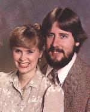
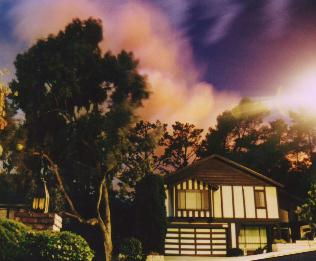
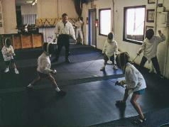
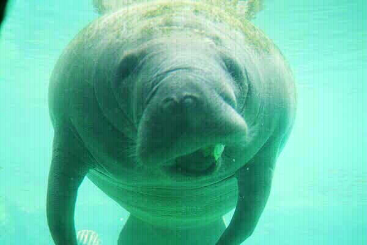
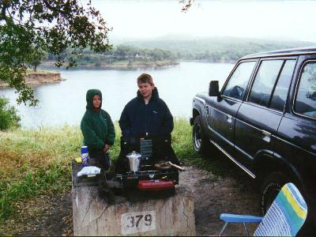

Write us:


Already online: Our vacation photos from London and Scotland.
Jim McQueen
Nancy McQueen
Sean McQueen
Scott McQueen
Glendale, California

Nancy & Jim's high school reunion.
OK, this was a few years ago, but it's my favorite picture of Nancy.
I won't apologize for wanting my wife to look her best.
Hi-Res GIF (104k)
Our most popular section
Once or twice a month I get e-mail from some total stranger
who's named McQueen.
Other people with our names on the Internet:
Other Jim's
Other Nancy's
Other Sean's
Other Scott's

The Glendale Fire!
December, 1999

Sword fighting birthday party.
Scott and 18 other seven-year-olds.
Sept 1999. More Photos

Manatee at Homosassa Springs, Florida; July 1999
More pictures from this vacation.

Morning at Lake Cachuma.
Morning on the kid's first campout.
May 1999. More Photos
From 1997 Florida Vacation
You gotta have links, so here's some:
McQueen Clan Tartan (32K)
You too can use the lovely McQueen Tartan as your Windows Wallpaper!
(It's not bad on a desktop, but I tried it as an HTML background and YICK!!!)
Click Here to download my first homebrew DOOM wad file (64k).
Click Here to download my second homebrew DOOM wad file (128k).
(Still under construction... Check back later!)
You are visitor number: 
(If you see "ERR1" it means that the boneheads at
Web-Counter lost my counter AGAIN!)
Original location of this page is here.
Github version. Copied from Charter.net 8/2016. Pretty retro, from 2000-2003.